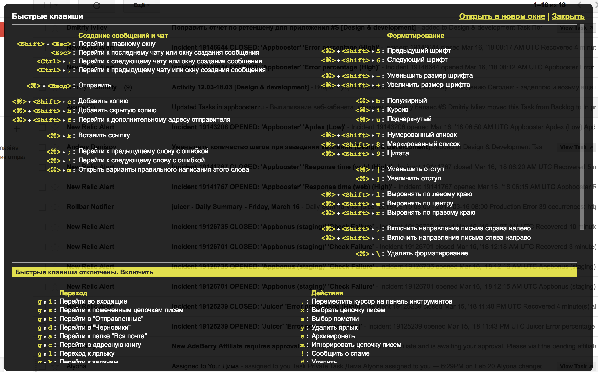

Джедайские техники
О чём поговорим?
- Клавиатура и как ей пользоваться
- Скрытые трюки в MacOS
- Рекомендуемые приложения
Печатаем только вслепую

Горячие клавиши
- Необходимость — когда заметили, что делаете одно действие часто
- Случайно — нашли и поняли, что удобно
Горячие клавиши
- ? для отображения в вебе

Настройки: бонус
defaults write NSGlobalDomain KeyRepeat -int 0
Настройки

Отключение уведомлений
Finder – папка по умолчанию

Ещё:
- Ctrl+scroll – зум
- cmd+c, cmd+option+v – вырезать/вставить
- cmd+ctrl+space – emoji
Скриншоты
cmd+shift+
- либо 3 – весь экран
- либо 4 – выбранная зона
- + ctrl — чтобы положить в буфер
Скриншоты
Monosnap для разметки
Скриншоты
Recordit для скринкастов

Скриншоты: линейка!
Quick look
Можно ставить плагины

- Markdown
- JSON
- YML
- CSV
- IPA
Продвинутые настройки
- Отключение анимаций открывания окон, анимаций открывания из дока
- Immutable док, чтобы нельзя было его ресайзить
- Ускорение ресайза при переходе в фулл-скрин
Приложения
brew cask install google-chrome recordit divvy
- Window management (demotime!)
- $13.99
- Spectacle – Open source
- Прячем ненужные иконки в доке
- 900₽
- Vanilla – open source!

- Вам его точно не хватало
- Бесплатное
Синхронизация конфигов между системами, Mac/Linux
Bear – Лучшее приложение для заметок
$1.49 monthly or $14.99 annually.
Alfred

- Запуск приложений
- Калькулятор
- Конвертер
- Гугл
- Переводчик
- Контакты
- Гифки
- Emoji
- Shell
- Конвертер цветов
- IP
- Caniuse
- Карты
- Сниппеты
- ~150 плагинов
Советы
- Рефлексируйте
- Гуглите
- Автоматизируйте
- Ищите tips & tricks